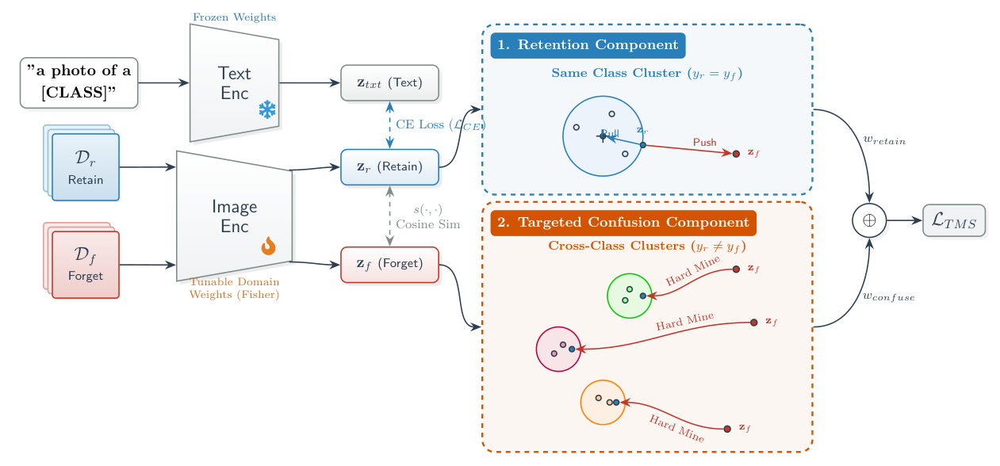

Target sensitive parameters
A diagonal empirical Fisher mask selects weights with greater sensitivity to the forget domain than to the retain domains.
In a few shot setup, domain forgetting should extend to unseen classes showcasing sample efficiency during unlearning.
1 The University of Queensland 2 Monash University
Can a few-shot intervention forget a domain beyond the classes it observes?
A model may stop recognizing illustrated cars yet still recognize illustrated bicycles. Testing only the classes used during unlearning can hide this failure.
We introduce Open-Vocabulary Domain Unlearning (OVDU): use only a few support images per seen class to unlearn a domain, then test whether forgetting extends to held-out classes while retaining recognition in other domains.
Few-shot images from the forget and retain domains.
Reduce forget-domain recognition while preserving retain-domain accuracy.
Fisher-guided parameter isolation and Targeted Manifold Scattering (TMS) combine selective weight updates with explicit geometric preferences.

A diagonal empirical Fisher mask selects weights with greater sensitivity to the forget domain than to the retain domains.
Retain embeddings prefer same-class retain neighbors over forget embeddings of the same class.
Hard mining draws each forget embedding toward its most similar cross-class retain neighbor, without a fixed incorrect target.
The text encoder stays frozen. Only selected visual weights are updated. The Fisher mask provides a local relative-sensitivity constraint, not a guarantee of complete knowledge removal.
TMS achieves the highest reported harmonic mean in all 12 dataset–class-fraction settings in Table 1.
| Method | Forget accuracy ↓ | Retain accuracy ↑ | Harmonic mean ↑ |
|---|
All values are percentages, transcribed from Table 1. “Baseline” in the paper is NegGrad + Fisher. Evaluation uses all classes and one forget domain.
HM balances retention and erasure:
2 × R × (100 − F) / (R + 100 − F)
Reported aggregates are reproduced as published.
These are empirical results under the paper’s protocol. Reduced classification accuracy is the operational forgetting metric; it does not certify that all domain information has been removed.
Vision-Language Models (VLMs) exhibit remarkable zero-shot generalization, yet they often encode unwanted or hazardous stylistic domains such as idealized textbook diagrams in medical AI or cartoon vehicles in autonomous driving. Approximate Domain Unlearning (ADU) aims to selectively erase a model’s recognition of a target visual domain while preserving accuracy on the remaining domains. However, existing ADU methods operate under a flawed closed-vocabulary assumption: they evaluate unlearning solely on the specific object classes seen during the unlearning fine-tuning phase. Consequently, these methods do not unlearn the domain itself; they merely overfit to seen class-domain pairs, leaving the domain easily recognizable for unseen classes and providing a false sense of removal. We argue that true domain erasure must be class-agnostic. To address this, we formalize Open-Vocabulary Domain Unlearning (OVDU), a rigorous protocol that mandates domain forgetting must transfer to held-out classes. To solve the OVDU challenge, we propose a surgical parameter-editing framework. First, a Fisher Information mask restricts updates to parameters with greater empirical sensitivity to the forget domain than to the retain domains, helping limit interference with zero-shot generalization. Second, our Targeted Manifold Scattering (TMS) objective uses preference-based mining to locally scatter the forget domain’s stylistic geometry. Evaluated across PACS, OfficeHome, and DomainNet, our method vastly improves open-vocabulary generalization over existing baselines. Crucially, it delivers exceptional sample efficiency, outperforming peak 8-shot baseline results with only 4 shots.
@inproceedings{udupa2026ovdu,
title={Open-Vocabulary Domain Unlearning},
author={Udupa, Sumanth and Harandi, Mehrtash and Luo, Yadan
and Baktashmotlagh, Mahsa},
booktitle={Advances in Neural Information Processing Systems},
year={2026}
}This work was supported by Australian Research Council Project FT230100426 and partially supported by the use of the Nectar Research Cloud, a collaborative Australian research platform supported by the NCRIS-funded Australian Research Data Commons (ARDC).